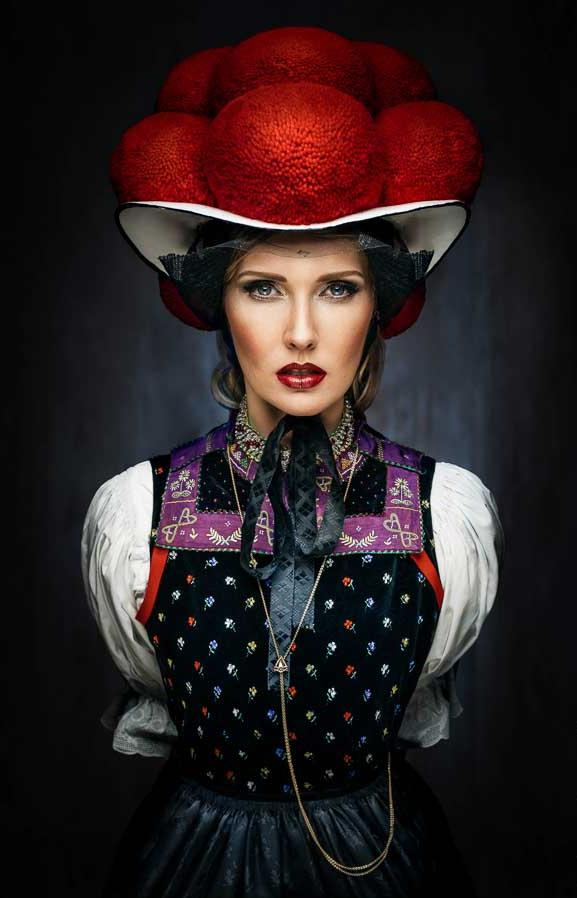

Famous for its cuckoo clock and cake the Black Forest is a forested
mountain range in Germany, bounded by the Rhine valley and close to
the borders with France and Switzerland. Thousand years ago, the
Romans expanded their empire and name the region "silva nigra" which
"black forest" because of the density of the forest.

To find out more about the Black Forest region, check this website
...did you know that the Feldberg ist the highest mountain in the
Black Forest? It is 1493 m high. In summer hikes around the moutain
and the lake are very popular. In winter snow is perfect for skiing or
sledging.
Freiburg is one of the greenest cities in Germany
...did you know that the suburb of Vauban is mostly car free and that
the buildings are all low-energy buildings? The city center can be
visited best on foot or by bike to enjoy the little streets, called
"Gässle" and follows the canals around the city called "Bächle".